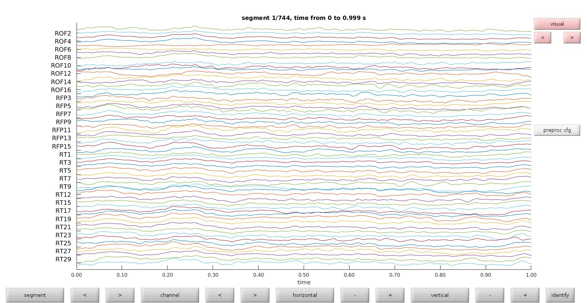
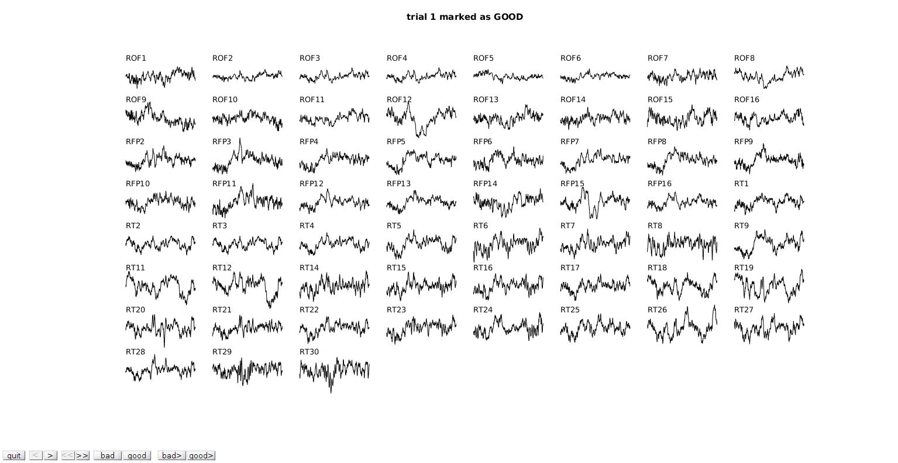
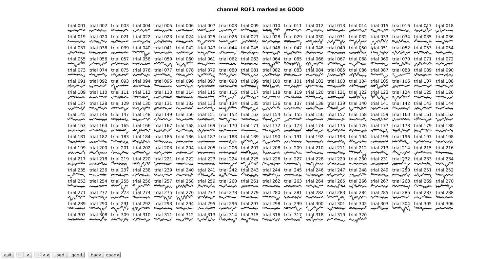

Introduction
The purpose of this tutorial is to provide basic commentary on our preprocessing protocol. Each case we handle is treated differently. This is an example protocol that is typical for a grid subject.
Contents
Our current protocol (07/12/2017) can be segmented into three general sections - Standard preprocssing - Signal processing methods that are standard across all subjects - Includes resampling, filtering, and fieldtrip setup - Visual inspection - Artifact rejection, channel rejection, event rejection - Rereferencing - Reducing data dependencies
Standard preprocessing in FieldTrip
% Specify input and outputs for signal file inpath = '0_Data/IR53/sig/IR53_raw.besa'; outpath = '0_Data/IR53/sig/IR53_FT.mat';
Resample signal
Most datasets come in at 5000 Hz sample rate. We downsample to 1000 Hz (saves computation time; standard for the field)
% Load the data into fieldtrip friendly format
cfg = [];
cfg.dataset = inpath;
dat = ft_preprocessing(cfg);
processing channel { 'DC01' 'DC02' 'DC03' 'DC04' 'ROF1' 'ROF2' 'ROF3' 'ROF4' 'ROF5' 'ROF6' 'ROF7' 'ROF8' 'ROF9' 'ROF10' 'ROF11' 'ROF12' 'ROF13' 'ROF14' 'ROF15' 'ROF16' 'RFP1' 'RFP2' 'RFP3' 'RFP4' 'RFP5' 'RFP6' 'RFP7' 'RFP8' 'RFP9' 'RFP10' 'RFP11' 'RFP12' 'RFP13' 'RFP14' 'RFP15' 'RFP16' 'RST1' 'RST2' 'RST3' 'RST4' 'RST5' 'RST6' 'RST7' 'RST8' 'RST9' 'RST10' 'RST11' 'RST12' 'FZ' 'CZ' 'PZ' 'OZ' 'C3' 'C4' 'RUE' 'RLE' 'LUE' 'LLE' 'EKG' 'REF' 'RT1' 'RT2' 'RT3' 'RT4' 'RT5' 'RT6' 'RT7' 'RT8' 'RT9' 'RT10' 'RT11' 'RT12' 'RT13' 'RT14' 'RT15' 'RT16' 'RT17' 'RT18' 'RT19' 'RT20' 'RT21' 'RT22' 'RT23' 'RT24' 'RT25' 'RT26' 'RT27' 'RT28' 'RT29' 'RT30' 'RT31' 'RT32' }
reading and preprocessing
reading and preprocessing trial 1 from 1
the call to "ft_preprocessing" took 4 seconds and required the additional allocation of an estimated 2610 MB
Resample the data.
detrend:
Detrend at the experiment level (now) to account for large electrode drifts that can be seen in the signal. I also think that it is important to remove drifts before any band-filtering.
demean:
Demean at trial level (later) so ERPs plot cleanly. I don't run many amplutude sensitive analyses so it doesn't make a huge differences for me.
cfg = []; cfg.resamplefs = 1000; cfg.detrend = 'yes'; cfg.demean = 'no'; dat_res = ft_resampledata(cfg,dat); hdr = dat_res.hdr; hdr.Fs = 1000; hdr.nSamples = length(dat_res.trial{1});
the input is raw data with 92 channels and 1 trials the call to "ft_selectdata" took 0 seconds and required the additional allocation of an estimated 0 MB resampling data resampling data in trial 1 from 1 original sampling rate = 5000 Hz new sampling rate = 1000 Hz the call to "ft_resampledata" took 14 seconds and required the additional allocation of an estimated 508 MB
Filter Data
Bandpass Filter:
Why you shouldn't bandpass here
1) The processed dataset will be unusable for ERPs
2) You will obscure visual artifacts
3) You can always do it later
Why should you bandpass here?
1) You want to bandpass low frequency data for small time windows (there is A LOT to consider if you are doing that analysis anyway)
When should you bandpass?
Before any oscillatory analysis
What should you set as your bandpass?
[1,200 Hz] is what I'm generally comfortable with for a general bandpass. Some datasets will have high frequency noise around 100-150 Hz, if that is the case you may want to set your upper bound to a more conservative number
Bandstop Filter (aka Notch Filter):
Almost every dataset has significant electrical line noise at 60, 120, 180 Hz. Applying a notch filter will remove the noise in most cases. If line noise persists, I I throw the channel out if I am looking ERPs or >30 Hz oscillations.
cfg = []; cfg.preproc.bpfilter = 'no'; % Bandpass cfg.preproc.bpfreq = [1 200]; cfg.preproc.bsfilter = 'yes'; % Notch cfg.preproc.bsfreq = [58 62; 118 122; 178 182]; dat_res_filt = ft_preprocessing(cfg,dat_res); %Use resampled data
Warning: the trial definition in the configuration is inconsistent with the actual data Warning: reconstructing sampleinfo by assuming that the trials are consecutive segments of a continuous recording the call to "ft_selectdata" took 0 seconds and required the additional allocation of an estimated 522 MB preprocessing preprocessing trial 1 from 1 the call to "ft_preprocessing" took 0 seconds and required the additional allocation of an estimated 522 MB
Select channels to remove
Our current system is to compile notes on a spreadsheet. For some datasets (SEEG), Knight Lab will add notes to a shared file on their server. I pull that to our server and add additional notes. On that spreadsheets we mark channels to remove as well as electrode regional placements by various labelling schema (automatic, Knight Lab placements, Badre lab placement)
import_loc_notes_IR53_2; % function for loading .xlsx file with labels rem_ind = (OutofBrain)|(Epileptic)|(Discard); % labels for removed electrodes rem = strcat('-',Electrode(find(rem_ind))); keep = Electrode(find(~rem_ind)); elec_str = union(rem,keep); cfg.channel = ft_channelselection(elec_str,hdr.label);
Visual Inspection
View databrowser
This view mode is best for evaluating ictal artifacts and corrupted channels
Things to look for
1) Ictal artifacts
Ictal artifacts are screened by Knight Lab (usually twice). They will provide a list of artifacts that should be removed. Generally they choose to remove any electrode that is the source of the ictal event. If you want to be ultra conservative, you can remove the spread of the events as well (although usually they are considered potential source as well)
What to look for
- Sharp waveform
- Spreads across neighboring electrodes
- May occur several time on the same electrode
What to do
- Remove channel
- Remove event
2) High frequency noise
High frequency noise usually results from a bugged electrode, environmental noise, or unusual electrode placement (out of brain, on machine, etc.).
What to look for
-Consistent 'rippling'
-High frequency power on PSDs
What to do
- Throwout electrode
-Lowpass filter (I don't do this if I plan on rereferencing later).
3) Persistent line noise
Since we've already applied a notch filter, line noise at this point is significantly corruptive. There are more creative ways to remove line noise but at this point I tend to throw the channel out.
What to look for
- Unnatural oscillations that is always present (don't confuse with beta)
- PSD spikes
What to do
- Throwout electrode
- Advanced notch filters
% Use fieldtrip databrowser cfg.viewmode = 'vertical'; cfg.ylim = [-75,75]; new_cfg = ft_databrowser(cfg,dat_res_filt);
the input is raw data with 92 channels and 1 trials Warning: the data has been resampled, not showing the events detected 0 visual artifacts the call to "ft_databrowser" took 2 seconds and required the additional allocation of an estimated 521 MB

Remove eliminated channels
We have already removed channels that are marked in the .xlsx file; this next step removes channels that we specified using the databrowser. Note removed channels from the databrowser are not automatically reflected in the .xlsx sheet, and should be edited appropriately.
vec = zeros(size(dat_res_filt.cfg.channel)); for cid = 1:length(new_cfg.channel); vec(strmatch(new_cfg.channel{cid},dat_res_filt.cfg.channel,'exact')) = 1; end new_mat = dat_res_filt.trial{1}; new_mat = new_mat(find(vec),:); dat_res_filt.trial{1} = new_mat; dat_res_filt.label = new_cfg.channel;
Segment dataset into trials
Trial definition is kind of a pain right now. Check out my tutorial on event encoding to see how we encode event onset times to get a better idea of why.
At this point we have a vector of event onsets time compiled by my encocder.
load('/home/bfrick/Documents/MATLAB/ECoG_Pipeline/0_Data/IR53/sig/IR53_raw.mat', 'events_raw');
Since our trial length we are analyzing is [-250, 500] ms I choose a conservative [-1000 1000] ms. All the time window maneuvering is done during signal processing and data analysis. No need to constrain my window at this point.
pretrig = 1; % -1000 ms posttrig = 1; % +1000 ms Fs = 1000; % sample rate trl = []; si = []; for lid = 1:length(events_raw) new_trl = [events_raw(lid)-pretrig*Fs,events_raw(lid)+posttrig*Fs,pretrig*Fs ]; % [beginning, end, 0] new_si = [events_raw(lid)-pretrig*Fs,events_raw(lid)+posttrig*Fs]; % [beginning, end] trl = [trl; new_trl]; si = [si;new_si]; end cfg = []; cfg.trl = trl; cfg.sampleinfo = si; cfg.trials = 'all'; cfg.chans = 'all'; dat_res_filt_trial = ft_redefinetrial(cfg,dat_res_filt);
the input is raw data with 59 channels and 1 trials the call to "ft_redefinetrial" took 0 seconds and required the additional allocation of an estimated 0 MB
Trialwise Filtering
Now our data is in trial format! detrend. The data here is already detrended. I am 90% sure that detrending here is OK and should maintain transients (I believe it is a low frequency detrender that is not sensitive to window size), but I would check the documentation demean I demean the signnal here so the potentials are similar across electrodes and across trials bandpassfilter
cfg = []; cfg.detrend = 'no'; cfg.demean = 'yes'; cfg.preproc.bpfilter = 'no'; % Bandpass cfg.preproc.bpfreq = [1 200]; dat_trial = ft_preprocessing(cfg,dat_res_filt_trial);
the call to "ft_selectdata" took 0 seconds and required the additional allocation of an estimated 0 MB preprocessing preprocessing trial 320 from 320 the call to "ft_preprocessing" took 1 seconds and required the additional allocation of an estimated 0 MB
Trialwise visual inpection
This is similar to the databrowser we did before but now you'll all electrodes for one trial, and then all trials for one electrode. It's much harder to see the big picture here but it is useful for deteriming rereferencing schemas and finding artifacts you might have missed.
I like to use this pass for:
1) Second and third pass for general artifacts
2) Evaluation of correlations across electrodes
% *View trials* cfg = []; cfg.method = 'trial'; cfg.trials = 'all'; cfg.channel = ft_channelselection(elec_str,dat_res_filt_trial.label); cfg.keepchannel = 'no'; cfg.keeptrial = 'no'; dat_pass_1 = ft_rejectvisual(cfg,dat_trial);
the input is raw data with 59 channels and 320 trials showing the data per trial, all channels at once trial 1 marked as GOOD 320 trials marked as GOOD, 0 trials marked as BAD 59 channels marked as GOOD, 0 channels marked as BAD the call to "ft_selectdata" took 0 seconds and required the additional allocation of an estimated 0 MB the call to "ft_rejectvisual" took 2 seconds and required the additional allocation of an estimated 0 MB

View channels
cfg = []; cfg.method = 'channel'; % browse through channels cfg.trials = 'all'; cfg.channel = ft_channelselection(elec_str,dat_res_filt_trial.label); cfg.keepchannel = 'no'; cfg.keeptrial = 'no'; dat_pass_2 = ft_rejectvisual(cfg,dat_pass_1);
the input is raw data with 59 channels and 320 trials showing the data per channel, all trials at once channel ROF1 marked as GOOD 320 trials marked as GOOD, 0 trials marked as BAD 59 channels marked as GOOD, 0 channels marked as BAD the call to "ft_selectdata" took 0 seconds and required the additional allocation of an estimated 0 MB the call to "ft_rejectvisual" took 2 seconds and required the additional allocation of an estimated 1 MB

Rereferencing
Rereferencing is something we are still playing around with. I will post a tutorial on this when we have fully fleshed out some of our fringe ideas. In that tutorial I'll explain these analyses in much more detail
What we do
-For grid channels
--- Common average reference (CAR) across electrodes
- For SEEG channels
--- Bipolar referencing schema (using adjacent, same electrode, same region)
Why we do it
1) Remove single source artifacts
2) Remove conductive signalling
3) Remove external events (movement)
Concerns
1) CAR may propagate artifacts into healthy channels
-- which is why I rereference last
2) CAR does not really adress single source or conductive signalling
-- A bipolar montage poses a couple of problems for our grid cases (will adress in rereferencing tutorial)
-- We're not confidant in other methods (PCA, etc. addressed in rereferencing tutorial)
3) Bipolar rereferencing greatly reduces # of channels
-- necessary due to large conductance between same electrode channels
4) Bipolar creates a much larger ROI
-- necessary ...
CAR_BOOL = 1; % for most analyses I like to run it once with un-re-referenced data test the effect of rereferencing dat_reref = dat_pass_2; if CAR_BOOL load('0_Data/IR53/reg/simple.mat'); load('0_Data/IR53/reg/names.mat'); car_reref; % Rereferencing script for CAR dat_reref = dat_pass_2; for gn_id = 1:length(grid) cfg = []; cfg.chans = grid{gn_id}; cfg.reref = 'yes'; cfg.refchannel = grid{gn_id}; dat_reref = ft_preprocessing(cfg,dat_reref); end end
the call to "ft_selectdata" took 0 seconds and required the additional allocation of an estimated 0 MB preprocessing preprocessing trial 320 from 320 the call to "ft_preprocessing" took 1 seconds and required the additional allocation of an estimated 0 MB the call to "ft_selectdata" took 0 seconds and required the additional allocation of an estimated 0 MB preprocessing preprocessing trial 320 from 320 the call to "ft_preprocessing" took 1 seconds and required the additional allocation of an estimated 0 MB the call to "ft_selectdata" took 0 seconds and required the additional allocation of an estimated 0 MB preprocessing preprocessing trial 320 from 320 the call to "ft_preprocessing" took 1 seconds and required the additional allocation of an estimated 0 MB
Wrap-up
View trials again
This is your final draft, make sure nothing looks odd. Rereferencing (especially CAR) will highlight bugged channels and missed artifacts. If you're not saving your removed channels and events correctly, you'll notice that here as well.
cfg = []; cfg.method = 'trial'; cfg.trials = 'all'; cfg.channel = 'all'; cfg.keepchannel = 'no'; cfg.keeptrial = 'no'; dat_pass_temp = ft_rejectvisual(cfg,dat_reref);
the input is raw data with 59 channels and 320 trials showing the data per trial, all channels at once trial 1 marked as GOOD 320 trials marked as GOOD, 0 trials marked as BAD 59 channels marked as GOOD, 0 channels marked as BAD the call to "ft_selectdata" took 0 seconds and required the additional allocation of an estimated 0 MB the call to "ft_rejectvisual" took 2 seconds and required the additional allocation of an estimated 2 MB
Save it
Fieldtrip data formats are tricky. Any time you make a new preprocessing scipt, check your dat file here and look for inconsistencies. The dat file here will be your primary signal file for all future analyses.
display(['Saving... ',outpath]) dat = dat_pass_temp; reg = {}; % Add region for cid = 1:length(dat.label) reg{cid} = simple{strmatch(dat.label{cid},names,'exact')}; end dat.region = reg; save(outpath,'dat');
Saving... 0_Data/IR53/sig/IR53_FT.mat
Thanks! email me if you have concerns or questions